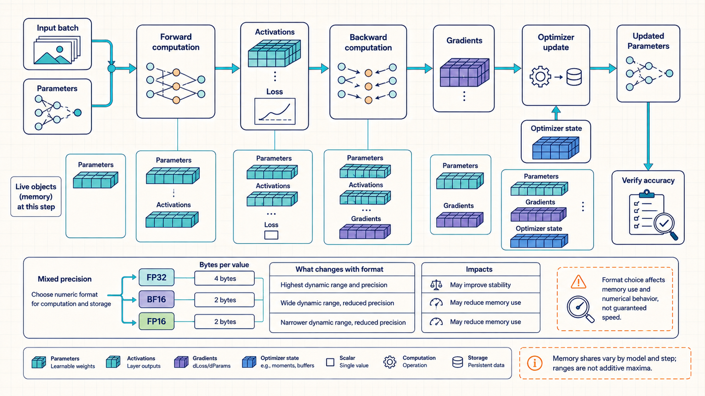

7 Training and Precision
Analyze training step time, memory scaling, mixed precision, and post-training quantization.
The earlier chapters established how one GPU receives work, moves tensor data, and exposes compute, memory, and launch limits. Training applies those mechanisms to a repeated parameter-update step whose live state includes activations, gradients, optimizer buffers, and the parameters being changed.
Two precision questions must remain separate. Training precision controls forward, backward, accumulation, and optimizer updates while the model is learning. Deployment quantization changes how a trained model stores or executes selected tensors during inference; quantization-aware training is a bridge because it trains against simulated deployment error.
A complete training analysis follows step time, live state, input delivery, optimizer work, and numerical precision in execution order. Deployment analysis then adds post-training quantization, quantization-aware training, calibration, compact formats, and the kernel support required for a smaller representation to improve performance.
A training step reads parameters and input data, saves selected activations for backward propagation, produces gradients, and updates parameters with optimizer state.

The diagram ties each memory object to the phase that uses it instead of adding unrelated peak percentages. Mixed precision can reduce traffic or use faster hardware paths, but some values may require wider accumulation or master state. The result must preserve stable learning and acceptable model quality, not only reduce step time.
7.1 Training step time and throughput
Training performance is the cost of repeating one parameter-update step. A batch is prepared and transferred, the model runs forward, backward propagation produces gradients, and the optimizer updates parameters. The slowest region or the uncovered gap between regions limits how many tokens can be trained per second.
- Training step: One repeated cycle that consumes a batch, computes a loss, propagates gradients, and updates model parameters.
- Step time: Elapsed time from the start of one training step to the start of the next comparable step after warmup. It includes data delivery, GPU work, optimizer work, and any communication that remains exposed.
- Global batch: All examples consumed before one optimizer update. On one GPU it is the local micro-batch times gradient-accumulation steps; across ranks it also includes the number of data-parallel replicas.
- Training throughput: Useful training tokens or examples completed per second. It must be reported with global batch, sequence length, precision, and the quality or convergence condition.
- Exposed tail: Work that remains after useful overlapping work has finished. For a single GPU it can be an input, optimizer, or synchronization delay; in distributed training it often includes unfinished communication.
\[ \text{training step time} \approx \text{data pipeline} + \text{input transfer} + \text{forward} + \text{backward} + \text{optimizer} + \text{exposed communication} \tag{7.1}\]
The terms are measured durations, not mandatory serial barriers. Input transfer can overlap with prior GPU work, and later distributed sections show how communication can overlap backward propagation. The useful diagnosis is the part that remains on the critical path after available overlap is accounted for.
The table below maps visible step symptoms to the first measurement that separates likely causes. It is a starting diagnosis, not a claim that one symptom has only one explanation.
| Visible step symptom | Likely live object or gap | First measurement |
|---|---|---|
| GPU idle before forward | CPU batch preparation, storage reads, tokenization, or host-to-device transfer | Timeline with data-loader work, copy events, and the first GPU kernel |
| Peak memory rises through forward | Saved activations and temporary attention or workspace tensors | Peak allocated/reserved memory plus activation-lifetime inspection |
| Backward dominates step time | Gradient kernels, activation reads, or unfused reductions | Kernel timeline and arithmetic-intensity or memory-traffic counters |
| Update is unexpectedly expensive | Optimizer moments, parameter writes, or many small update kernels | Optimizer-region timing and memory-traffic profiling |
| Step ends with a long wait | Uncovered input, synchronization, or distributed communication | Timeline showing the final CPU/GPU or rank-to-rank dependency |
The symptom table identifies where to measure first, but the limiting term is the work or gap that remains on the critical path after overlap. The next question is which parameters, activations, gradients, and optimizer buffers are live together and set the memory ceiling.
7.2 Training state and memory
Training usually keeps more live state than a weight-only inference baseline because a step holds gradients, optimizer buffers, and saved activations in addition to parameters. A serving process can still exceed that baseline when long-lived KV cache, request state, and workspaces consume substantial memory.
- Parameters: Persistent learned model values read during forward and updated after backward propagation.
- Gradients: Derivatives of the loss with respect to parameters. They are produced by backward propagation and consumed by the optimizer.
- Optimizer state: Extra update buffers such as Adam first and second moments. These often add more persistent bytes than the parameter tensor alone.
- Saved activations: Forward intermediates retained because backward kernels need them to compute gradients. Their lifetime makes batch size and sequence length central training-memory controls.
- Activation checkpointing: A memory technique that saves fewer forward intermediates and recomputes selected regions during backward. It reduces peak memory by trading it for extra computation and step time.
- Low-Rank Adaptation (LoRA): A parameter-efficient fine-tuning method that freezes the base model and trains small low-rank adapter matrices. It reduces trainable parameter, gradient, and optimizer-state memory, but it does not remove activation or workspace memory.
- Quantized Low-Rank Adaptation (QLoRA): A LoRA training path that stores the frozen base model in a quantized representation while training adapters through higher-precision compute where needed. It reduces frozen-weight storage, but depends on compatible dequantization kernels and still retains training activations.
LoRA and QLoRA change which parameter tensors receive gradients; activation checkpointing changes which forward tensors remain live. They solve different parts of the memory budget and can be combined when both trainable state and saved activations are limiting the step.
The first-order activation estimate separates linear saved tensors from a quadratic attention term. The coefficient 16 summarizes several projection, feed-forward, normalization, and activation tensors in this GPT-style approximation. The attention-storage coefficient records whether score-like tensors are materialized by a specific implementation:
\[ \text{activation elements per layer} \approx 16 B T d + k_{\text{attn}} B h T^2 \tag{7.2}\]
\[ \text{activation bytes} \approx b L (16 B T d + k_{\text{attn}} B h T^2) \tag{7.3}\]
Here B is the micro-batch size, T the sequence length, d the hidden dimension, h the attention-head count, b the bytes stored per element, L the layer count, and k_attn the implementation-dependent count of retained attention-score-like tensors. The formula exposes scaling; measure the actual retained tensors to determine the runtime’s peak memory.
For a GPT-2 Large-style example, set k_attn = 1 and use 36 layers, hidden dimension 1,280, 20 heads, sequence length 1,024, batch one, and two-byte activation storage. The linear and quadratic terms are then each about 21 million elements. Together they require about 84 MB decimal per layer and about 3.0 GB decimal across 36 layers in this first-order model. Increasing the batch to 32 raises the same estimate to about 96 GB decimal before optimizer state, workspaces, and allocator headroom.
The following choices reduce different live objects. They should be selected from the memory account, not treated as interchangeable capacity fixes.
| Memory lever | Object reduced | Main cost or condition |
|---|---|---|
| Activation checkpointing | Saved activations | Recomputes selected forward regions during backward and increases step compute |
| Smaller micro-batch with accumulation | Per-step activations | Needs more accumulation steps to preserve global batch; can change optimizer and scheduling behavior |
| BF16/FP16 or supported FP8 path | Stored activations, gradients, and selected state | Requires stable numerical behavior, compatible kernels, and correct accumulation or scaling policy |
| FlashAttention-style attention | Materialized attention-score-like tensors | Applies only when the selected attention kernel and dimensions are supported |
| State sharding | Per-rank parameters, gradients, or optimizer state | Introduces collectives and is developed after the communication foundations in Chapters 12 and 13 |
Activation memory and model-state memory are separate constraints. A sharding strategy can make a model fit while activations still exceed capacity; checkpointing can lower activations while optimizer buffers remain the limiting state. A useful memory report names the largest live object at peak, not only total allocated bytes.
7.3 Feeding data and applying updates
Training-step speed depends on the complete path: the host prepares the next batch, copies move it to the GPU, forward and backward kernels execute, and the optimizer reads gradients and persistent state before the next step begins.
- Data pipeline: The CPU- and storage-side path that reads examples, tokenizes or transforms them, assembles batches, and makes them available for GPU transfer.
- Micro-batch: The examples processed by one forward/backward pass before optional gradient accumulation. Its tensor dimensions determine activation memory and kernel shape.
- Gradient accumulation: Runs several micro-batches, adds their gradients, and performs one optimizer update afterward. It raises the effective global batch while keeping per-micro-batch activation memory lower.
- Fused optimizer: An optimizer implementation that combines update operations so parameters, gradients, and moment buffers are read and written with fewer launches or less intermediate traffic.
\[ \text{training tokens/s} = \frac{\text{global batch} \times \text{sequence length}}{\text{training step time}} \tag{7.4}\]
This throughput measure is meaningful only after warmup and alongside the global batch, sequence length, precision, and convergence behavior. A change that also changes optimizer update frequency, the loss curve, or model quality creates a different training setup and must be evaluated separately.
Follow the training step in execution order and check each stage before tuning the next one:
- Prepare the batch: CPU workers, storage reads, tokenization, and collation should make the next batch ready before the current GPU step finishes.
- Transfer to the GPU: Pinned host buffers, copy streams, and dependencies should permit overlap without serializing the step.
- Run forward and backward: Use profiler evidence to separate compute throughput, HBM traffic, launch overhead, activation memory, and gradient work.
- Update the parameters: Measure parameter, gradient, and optimizer-moment traffic separately from backward, and use fused update kernels where the runtime supports them.
- Apply gradient accumulation: Preserve the intended effective batch while tracking gradient lifetime, memory use, update frequency, and synchronization.
These are single-worker training controls. Once the full step is understood locally, Chapters 12 and 13 add the communication and state-placement costs of scaling the same step across GPUs and nodes.
7.4 Precision formats and PyTorch backend controls
A numeric format determines how values use their available bits. In training, the format must preserve a stable update while reducing memory traffic and using efficient matrix hardware. In deployment, the same format choice can instead target model footprint or inference bandwidth.
- FP32: 32-bit floating point. It is broadly supported and useful for numerically sensitive accumulation or reference results. The same tensor uses twice the storage of FP16/BF16; operation speed depends on the GPU, TensorFloat-32 policy, dimensions, and selected library kernel.
- TF32: TensorFloat-32, an NVIDIA tensor-core mode for many FP32 matrix operations. It keeps FP32-like exponent range but uses a reduced mantissa, so it can be much faster than strict FP32 while being less precise.
- FP16: 16-bit floating point with smaller range than FP32. It is common for training and inference on tensor cores, but training may require loss scaling or mixed-precision practices to avoid overflow/underflow problems.
- BF16: 16-bit Brain Floating Point. It has FP32-like exponent range with fewer mantissa bits, which often makes training more stable than FP16 while still reducing memory traffic relative to FP32.
- FP8: 8-bit floating-point families used on newer accelerators with scaling metadata and compatible kernels. Runtime support must handle scaling, accumulation, and selected operations.
- FP4 and block-scaled FP4: 4-bit floating formats often paired with one scale for a small block of values. Block scaling can preserve local dynamic range, but it adds scale loads, packing constraints, and hardware-specific kernel requirements.
- INT8: 8-bit integer representation commonly used for quantized inference weights and sometimes activations. It requires a mapping between integer codes and approximate real values, plus kernels that efficiently consume the representation.
- INT4: 4-bit integer representation often used for weight-only inference compression. Quality and speed depend strongly on grouping, scales, dequantization cost, and kernel support.
- Ternary weights: A specialized low-bit design whose weights take three values, such as negative, zero, and positive. It requires a model representation and kernel path designed for ternary values; an ordinary FP16 checkpoint needs conversion plus compatible kernels.
PyTorch precision settings permit framework-owned backend choices for supported operations. The selected path still depends on the PyTorch version, GPU, dimensions, dtype, and operation-specific eligibility.
| PyTorch control | Owner and scope | Performance meaning | Condition to verify |
|---|---|---|---|
torch.backends.cuda.matmul.fp32_precision |
PyTorch CUDA matrix policy in newer releases | Can permit reduced internal precision for supported FP32 matrix multiplication | Version, GPU support, output accuracy, and actual dispatched kernel |
torch.backends.cudnn.fp32_precision |
PyTorch cuDNN policy in newer releases | Can permit reduced internal precision for supported cuDNN operations | The operation is covered by cuDNN and the setting exists in the installed version |
torch.backends.cuda.matmul.allow_tf32 |
Older PyTorch CUDA matrix flag | Allows TensorFloat-32 for supported matrix multiplication | Version-specific guidance and whether a newer control supersedes it |
torch.set_float32_matmul_precision(...) |
PyTorch matrix-multiplication API | Selects internal precision policy for float32 matrix multiplication | It does not control convolution precision or model-quality requirements |
| Scaled-dot-product attention backend policy | PyTorch attention dispatch | Permits flash, memory-efficient, or math attention paths | Device, dtype, mask, head dimension, sequence dimensions, and backend availability |
The formats above describe available representations. The following update mechanisms keep reduced-precision compute paths numerically stable during training.
- Mixed-precision training: Runs selected tensor operations and storage in reduced precision while retaining higher-precision accumulation or selected state where numerical range matters. The objective is lower traffic and faster matrix paths without destabilizing parameter updates.
- FP32 master weights: One common FP16 mixed-precision design keeps persistent FP32 parameters for optimizer updates and casts a reduced-precision compute copy for forward and backward kernels. BF16, fused optimizers, sharded state, and newer low-precision recipes can use different layouts.
- Gradient underflow: A gradient becomes too small for the selected format and rounds to zero. FP16 is especially susceptible because its representable range is narrower than FP32 or BF16.
- Loss scaling: Multiplies the loss before backward propagation so small FP16 gradients are less likely to underflow, then divides the gradients by the same scale before the optimizer update. Dynamic loss scaling lowers the scale after overflow is detected.
- Higher-precision accumulation: Accumulates reductions, dot products, or optimizer updates in a wider format than the input operands when the hardware and kernel path support it. This preserves numerical headroom while retaining much of the throughput benefit of reduced-precision inputs.
The mixed-precision state path separates the representation used by fast matrix kernels from the representation that receives the parameter update. A common FP16 path keeps FP32 master weights, uses loss scaling, then unscales and checks gradients before the FP32 update. BF16 has a wider exponent range and often does not need loss scaling, although the optimizer and accumulation layout still depend on the selected training stack.
\[ \text{scaled loss} = S \times \text{loss}; \quad \text{unscaled gradient} = \frac{\text{scaled gradient}}{S} \tag{7.5}\]
Here S is a positive loss scale. Scaling keeps small FP16 gradients representable during backward propagation; unscaling restores their intended magnitude before the optimizer updates the FP32 master weights. A finite-value check detects overflow before an invalid update is applied.
FP8 is a family, not one format. The two common FP8 encodings trade exponent range against mantissa precision, and practical systems add scaling metadata so tensors with wider dynamic range can still be represented.
| Format or scaling choice | What it changes | Performance effect |
|---|---|---|
| E4M3 | Four exponent bits and three mantissa bits | More precision within a narrower range; often useful for values whose range can be controlled by scaling |
| E5M2 | Five exponent bits and two mantissa bits | Wider dynamic range with less mantissa precision; useful when overflow risk is more important than small relative error |
| Per-tensor scale | One scale for a whole tensor | Low metadata overhead but poor fit when channels or blocks have different ranges |
| Per-channel or per-block scale | Separate scales for smaller groups | Better local fit and fewer saturated values, but extra metadata and more complex kernels |
The same block-scaling idea appears in emerging FP4 paths. One implementation family can use a coarse power-of-two scale for each small block, while another uses a finer floating scale; the local trade-off is scale precision against scale storage and conversion cost. These formats are platform- and kernel-specific. Treat a reported FP4 throughput gain as a measured result for a named model, accelerator, and runtime path, not as a universal property of four-bit storage.
Performance condition
A smaller representation improves latency or throughput only when the runtime avoids moving the original wider values and uses an efficient hardware path for the selected format.
A format choice is therefore not accepted from bit width alone. Training must preserve stable updates and convergence, while deployment must preserve task quality and show that the compact representation remains on the measured kernel path.
7.5 Deployment quantization
Deployment quantization starts with an already-trained model and changes how selected tensors are represented at inference time. It is useful when the measured bottleneck is weight or cache bytes, memory capacity, or a hardware path that efficiently consumes the compact representation.
- Weight quantization: Stores model parameters in fewer bits. It mainly targets persistent weight memory and repeated weight reads during inference.
- Activation quantization: Stores or computes intermediate tensors in lower precision. It can reduce traffic between operations, but it is more sensitive to calibration because activation distributions vary with data.
- KV-cache quantization: Stores attention keys and values in fewer bits during serving. It targets the dynamic memory object that grows with active requests and context length.
- Dequantization: Conversion from a compact representation back to a wider representation for computation. If dequantization is expensive or happens too early, the latency benefit can disappear.
- Scale metadata: Extra values that map low-precision integers or floating formats back to approximate real values. Group size and scale placement affect both quality and kernel cost.
Affine integer quantization stores an integer code q for a real value x. The scale s sets the size of a quantization step and the zero point z makes code zero represent a chosen real zero. The runtime later reconstructs an approximate wider value when a kernel needs it:
\[ q = \text{clip}\left(\text{round}\left(\frac{x}{s}\right) + z\right) \tag{7.6}\]
\[ \text{dequantized } x = s \times (q - z) \tag{7.7}\]
The stored code is smaller, but the end-to-end gain depends on where the second mapping occurs. A fused low-bit matrix kernel can unpack codes, apply scales, and accumulate without first materializing a full FP16 or BF16 tensor. A separate early dequantization pass can give back much of the saved memory traffic.
When a workload is memory-bound, reducing bytes moved can be more valuable than reducing arithmetic. Evaluate whether the hot path avoids reading, writing, or transferring the wider representation.
7.6 Quantization methods and libraries
Quantization can target three different tensor families, and each family belongs to a different part of the execution path. Weights are persistent model parameters read by linear layers. Activations are intermediate values produced while executing a request or training step. The key-value cache is serving-time attention state stored across decode steps. Each family requires compatible formats, kernels, scaling metadata, and quality validation.
Weight-only quantization is usually the simplest inference path: it shrinks parameters while leaving activations in a higher precision. Activation quantization is more intrusive because activation distributions vary by layer, token, and workload. Key-value cache quantization targets long-context serving capacity and decode bandwidth, but it can affect attention quality and needs engine support.
- GPTQ: A post-training weight quantization method that uses approximate second-order information to choose quantized weights with lower reconstruction error than naive rounding. It is commonly used for low-bit inference checkpoints when compatible kernels exist.
- AWQ: Activation-aware Weight Quantization. It protects weight channels that are important for activations drawn from the expected workload, reducing quality loss for low-bit weight-only inference.
- FP8 and KV-cache quantization: FP8 targets lower-precision tensor and cache storage with hardware/runtime support. KV-cache quantization reduces long-context memory pressure but can introduce dequantization cost and attention-quality risk.
AWQ and GPTQ are checkpoint and method families, not magic runtime guarantees. They reduce weight bandwidth and footprint only when the serving stack uses kernels that consume the quantized representation efficiently. If the runtime dequantizes into wider tensors too early or launches separate conversion kernels on every step, the latency gain can disappear even though the checkpoint is smaller.
| Method | Mechanism | What it helps | What still must be checked |
|---|---|---|---|
| GPTQ | Uses calibration data and approximate second-order reconstruction to choose low-bit weights with lower layer-output error than naive rounding | Weight-only low-bit inference when parameter reads or model fit are the bottleneck | Quantization time, compatible kernels, quality on prompts from the expected workload, and whether dequantization stays fused |
| AWQ | Uses calibration activations from the expected workload to find important channels and protects them through activation-aware scaling before low-bit weight quantization | Hardware-friendly weight-only inference where a small set of important channels drives error | Calibration domain, packed-weight layout, kernel support, and whether activation outliers shift in production |
| FP8 path | Stores or computes selected tensors in FP8 with scaling factors and wider accumulation where required | Bandwidth, tensor-core throughput, activation or KV-cache footprint on supported accelerators | Scaling granularity, amax handling, supported operations, and numerical quality |
7.6.1 Quantization libraries and kernel support
A quantization method becomes a runnable performance path through a library and compatible kernels. The implementation owns packing, scale metadata, conversion, supported devices, and the operations that can consume the compact representation.
- bitsandbytes: A low-precision training and inference library with quantized optimizer and weight paths. Its benefit depends on the selected model, format, GPU, and kernel support.
- torchao: PyTorch-native quantization and sparsity tooling that integrates supported low-precision representations with PyTorch models and execution paths.
- Implementation support: The concrete combination of packed layout, scale granularity, dequantization strategy, matrix kernel, GPU architecture, and runtime version that turns a small checkpoint into a fast execution path.
- Measurement boundary: Checkpoint size demonstrates storage compression. End-to-end latency, throughput, peak memory, and quality demonstrate whether the implementation helps the workload.
Use a library name as an implementation example rather than as the definition of quantization. GPTQ, AWQ, FP8, INT8, and INT4 describe methods or formats; bitsandbytes and torchao provide selected software paths for them.
7.7 Calibration and deployment
Calibration chooses quantization parameters from tensors drawn from the expected workload. Hardware support determines whether the GPU and runtime have fast kernels for the chosen format. Both are required for a useful quantized deployment.
- Calibration set: Prompts, activations, or layer inputs drawn from the expected workload and used to estimate value ranges.
- Scale: A multiplier that maps low-precision stored values back to approximate real values. Scales can be per tensor, per channel, per group, or more specialized depending on the method.
- Clipping range: A selected numeric range that limits outliers before quantization. Aggressive clipping can improve average reconstruction but harm rare important values.
- Per-channel or per-group quantization: Uses separate scales for smaller tensor groups. This usually improves quality relative to one global scale, but increases metadata and kernel complexity.
- Weight-only calibration: Focuses on parameter tensors and workload-derived activations used by methods such as GPTQ or AWQ.
- Activation and KV-cache calibration: Targets runtime tensors whose distributions depend on prompts, sequence length, layer, and model behavior. Mistakes here can produce quality loss that a simple file-size check will not reveal.
- Kernel support: The runtime must have kernels that consume the quantized representation efficiently. Otherwise it may dequantize to FP16/BF16 early and lose most of the expected speedup.
Two deployment paths differ in when low-precision behavior enters the model lifecycle:
- Post-Training Quantization (PTQ): Converts an already-trained model for lower-precision deployment. A calibration run records weight or activation ranges from the expected workload, derives scales and zero points, packs the selected tensors, then checks quality and runtime behavior.
- Quantization-Aware Training (QAT): Trains with fake quantization and dequantization operations in the forward pass, so model updates see an approximation of the error introduced by the deployed representation.
- Straight-Through Estimator (STE): A backward-pass approximation used for a rounding-like fake-quantization operation. It substitutes a usable derivative estimate so gradient-based optimization can continue.
During QAT, the forward pass applies fake_quant(x), a simulation of the chosen deployment quantization. The true derivative of rounding is not useful for gradient descent, so the STE assigns the following backward rule in the supported range:
\[ \text{STE backward rule: } \frac{\partial \text{fake-quant}(x)}{\partial x} = 1 \tag{7.8}\]
Here ∂ fake_quant(x) / ∂x means the rate of change assigned to the fake-quantization operator with respect to its input x. The equality defines the surrogate gradient used by backward propagation; it does not claim that the true derivative of rounding is one.
PTQ uses a short offline calibration step and may lose quality at low bit widths. QAT spends training compute to adapt the model to the deployed representation. Compare quality on requests drawn from the expected workload, then measure whether the selected engine uses the packed format in its hot kernels.
Group size is the local granularity of a quantization scale. It is one of the clearest examples of a performance-quality trade-off: the smaller the group, the better the scale can fit local values, but the more scale metadata and indexing work the kernel must carry.
Training-precision changes pass only when the update remains numerically stable and convergence is preserved. Deployment quantization passes only when task quality remains acceptable and the measured engine uses the compact representation to improve memory, latency, or throughput under the intended workload.
| Group-size choice | Quality effect | Runtime effect | When it is attractive |
|---|---|---|---|
| Small groups | Better local reconstruction because fewer unrelated values share one scale | More scale reads, more metadata, and more complex packing or dequantization | Accuracy is fragile and kernels are designed for that grouping |
| Large groups | More values share a scale, so outliers can waste quantization range | Less metadata and simpler memory access | Bandwidth or metadata overhead dominates and quality remains acceptable |
| Per-channel groups | Fits channel-level activation or weight ranges | Works well when kernels can load scales along the channel dimension efficiently | Linear layers where channel statistics are stable enough under calibration |
| Per-block groups | Fits local blocks rather than whole tensors | Can align with tile layouts, but only if the backend expects that layout | FP8 or INT4 paths with block-scaled kernels |
Poor calibration can preserve speed while harming quality. Poor hardware or kernel support can preserve quality while failing to improve latency. A low-bit checkpoint without matching kernels is a storage optimization first, and only a latency optimization if the execution path actually uses the compact format on the hot path.
Training changes parameters and therefore keeps gradients, saved activations, and optimizer state live. Inference fixes the parameters but introduces request state, prompt prefill, repeated token decode, and a growing KV cache. Chapter 8 builds that different workload and its user-visible metrics from the request path onward.